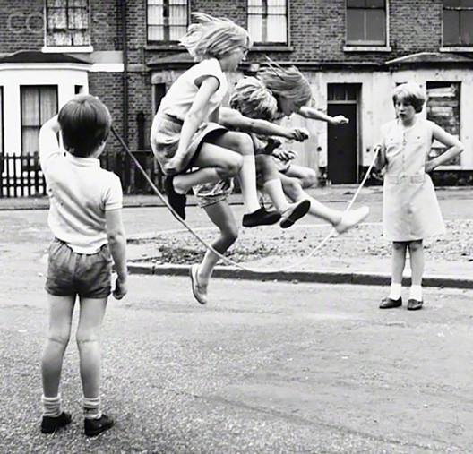

MUD 602 — History of Urban Design · TJU · 2025
Mobility for Life: From Car-Centric to Human-Centric Streets
Streets are the most significant yet most overlooked public spaces in cities. This paper argues that future cities must transform streets from simple connectors between destinations to the destination itself — addressing the economic, design, and environmental crises created by car-centric planning through a framework of human-centred urban mobility.
Mobility
Street Design
Car Dependency
Human-Centred Planning
Public Space
Read Paper